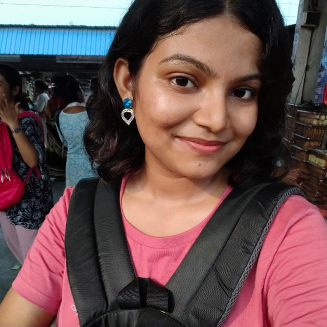

Diagnose 40+ crop diseases with dual-engine Multimodal Cloud AI, get precision spray prescriptions, live APMC Mandi rates, and 10-language voice agronomy advice — 100% free for every farmer.
Built natively with Jetpack Compose & Kotlin, providing zero-latency diagnostics, high-accuracy verification, and automated farming toolkits.
Instantly identifies crop disease signatures across 40+ Indian crops (Tomato, Wheat, Cotton, Potato, Grape, Rice) with deep neural vision reasoning.
Deep secondary cross-examination cross-checks disease severity, symptoms, and calibrates exact chemical fungicide grams per Litre of water.
Natural voice chat in Hindi, Bengali, Punjabi, Marathi, Telugu, Tamil, Gujarati, Kannada, Odia & English with live speech recognition and audio playback.
Generates printable, formatted agricultural doctor slips with diagnosed disease, exact chemical & bio remedies, safety precautions, and 1-tap WhatsApp sharing.
GPS-enabled market intelligence tracks real-time crop prices across thousands of mandis with AI-powered buy, hold, or sell price forecasts.
Calculates exact Urea, DAP, MOP, and Organic FYM bag requirements tailored to local acreage (Acre, Bigha, Guntha, Hectare) preventing crop damage.
Designed for simplicity so any farmer can get expert plant pathologist advice in under 5 seconds.
Open the optical scanner and point your camera at the diseased plant leaf. The holographic reticle guides alignment for crisp image capture.
On-device MobileNetV2 model classifies leaf condition in 50ms, while secondary Gemini/NVIDIA vision AI verifies diagnosis and calibrated dosage.
View exact chemical spray doses, organic desi remedies, prevention tips, and download or WhatsApp an official doctor prescription slip with 1 tap.
Powered by Dual AI Verification — combining Google Gemini 2.5 Flash and NVIDIA NIM Vision for unparalleled diagnostic accuracy.
Two-tier neural cross-examination eliminates false diagnosis by cross-verifying leaf symptoms across Gemini & NVIDIA vision LLMs.
Multimodal vision reasoning, leaf pathology detection, and 10 Indian language voice agronomy consultation (AI Salah).
High-performance Llama-3.2 vision cascade fallback ensuring 99.9% uptime and secondary prescription validation.
Encrypted local SQLite database with seamless cloud synchronization and strict user data privacy.
The engineering and design team dedicated to empowering Indian farmers with open-source AI precision agriculture.
Engineered the Jetpack Compose architecture, TFLite on-device inference pipeline, dual Gemini & NVIDIA NIM cascade layers, and 10-language voice agronomy engine.
Contributed to Android UI architecture, Room database synchronization, agro-weather tracking services, and overall application performance tuning.
Contributed to APMC Mandi Bhav live integration, GPS auto-location detection, commodity price filtering, and end-to-end API testing.
Contributed to ICAR fertilizer calculations, 1-Tap PDF doctor prescription generation with QR verification, and regional agronomy localizations.

Contributed to plant pathology disease classification datasets, agronomic treatment validation, and user interface testing across regional languages.
Contributed to farmer usability research, UX interaction flows, Sarkari Yojanaen documentation, and field feedback consolidation.
Everything you need to know about Fasal Drishti AI and its deployment.
Fasal Drishti AI is designed as a digital agronomic decision-support system. While our multimodal Gemini and NVIDIA AI vision models strive for highest precision, farmers and users are advised to verify extreme chemical applications with local agricultural extension officers or certified KVK agronomists.
Always wear protective gloves and face masks when preparing and spraying chemical fungicides or pesticides. Ensure safe disposal of empty containers as per statutory environmental guidelines.
Fasal Drishti AI is distributed free of charge for Indian farmers, researchers, and students. Commercial resale of this application without open-source attribution is prohibited.
Fasal Drishti AI prioritizes user privacy. All personal crop diagnostic histories and conversational chats with AI Salah are stored securely inside your phone's encrypted on-device SQLite database.
Camera access is strictly utilized in real-time to capture leaf samples inside the reticle. Audio microphone access is only triggered when you tap the voice microphone icon to speak with the AI Salahkar.
Fasal Drishti AI contains zero third-party ads, zero tracking pixels, and does not sell or monetize farmer agricultural records.